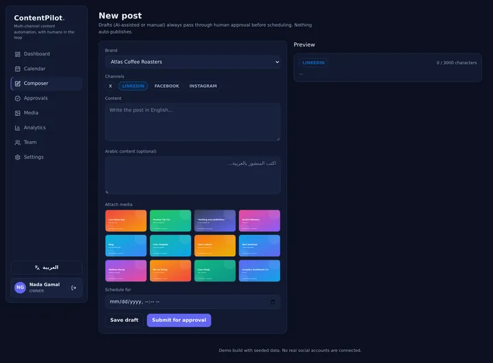
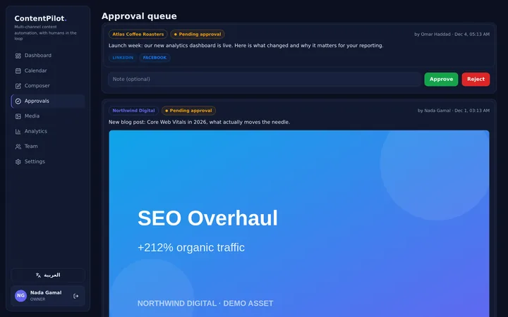
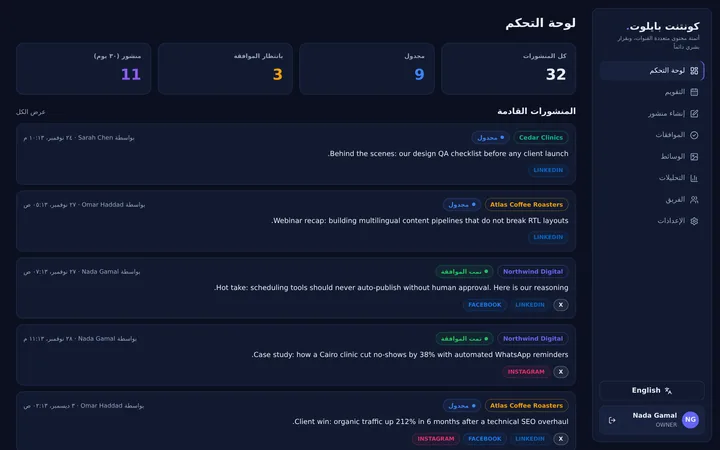

PORTFOLIO DEMO / BUILT / LIVE DEMO
ContentPilot
Plan once. Publish only what a person approved.
 ACTUAL BUILD
ACTUAL BUILDContentPilot · Dashboard. Seeded demo brands and posts.
The problem
Small teams that post for several brands need one place to plan content, and a clear rule that nothing goes out without someone approving it.
What was built
A content calendar with rescheduling, a composer for X, LinkedIn, Facebook and Instagram with per-channel previews and character limits, an approval queue with history, a media library, analytics views, multi-brand workspaces with team roles, and a full English and Arabic right-to-left interface.
The approach
Approval is the core rule: only an owner or admin can approve, and nothing is scheduled before that. Next.js and Prisma on SQLite keep the demo easy to run. The live demo opens with a one-click role picker, no password.
The result
A working, hosted demo you can open and click through, with the repository and screenshots alongside. The layout adapts to phones: navigation becomes a top bar and the calendar scrolls sideways.
Evidence & production limits
The production build passed and the screens were checked in English and Arabic. The hosted demo uses seeded sample data. Changes you make there are temporary and reset when the server restarts.
Built / demo. Brands, posts, people and analytics are synthetic. Nothing posts to real social accounts and no accounts can be connected. Real publishing through official platform APIs, real analytics, mobile apps and production sign-in would be separate work. The repository README compares it honestly with paid tools.
Next chapter
Publishing through official social APIs and real sign-in would be the next implementation steps.
Inside the build
Open any preview to see the full capture. Captures show test or demonstration content. All records shown are demonstration content, not evidence of client use.


